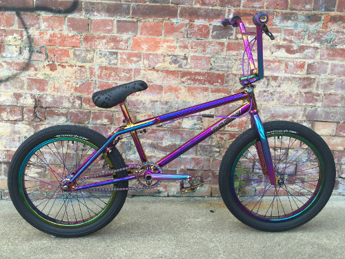

BMX (велосипед)
BMX (Bicycle motocross) — разновидность велосипеда, изначально  придуманная взрослыми любителями мотокросса для тренировки своих детей. Для детей — будущих спортсменов мотокросса и мотофристайла, физически невозможно было учиться кататься на полноразмерных мотоциклах для мотокросса, а специальных детских моделей в то далёкое время (1960-ые) не было. Такой велосипед был проще для освоения. Потом BMX уже перерос в отдельный вид спорта, разделённый на несколько дисциплин, две из которых являются олимпийскими видами спорта — BMX freestyle и BMX racing.
Главной особенностью велосипеда BMX являются колёса размерностью 20 дюймов, полное отсутствие подвески и наличие всего лишь одной передачи. В остальном же вариации могут быть разными. Велосипеды типа BMX как правило очень манёвренны, обладают низким весом (до 13 кг).
Как выбрать BMX?
Чтобы понять, как выбрать BMX велосипед, кроме цвета и внешнего вида, пройдемся по несколькими ключевым параметрам:
Ростовка рамы
Размер рамы у BMX измеряется по длине верхней трубы велосипеда.

Правильный выбор ростовки влияет на:
а) Удобство выполнения трюков и скорость обучения. Не стоит удивляться что катание дается с трудом, если вы неправильно выбрали размер велосипеда;
б) Здоровье - неправильно подобрав ростовку BMX, легко заработать сколиоз.Подшибники
Определившись с размером, переходим к деталям. Первые на очереди - подшипники. Во время катания на BMX они подвергаются жестким нагрузкам, поэтому важно подобрать заранее хорошие. Подшипники в BMX велосипедах бывают промышленные и насыпные.
Материалы
В BMX принципиально существуют два материала, которые используются отдельно или комбинируются:
Cr-Mo (хромомолибленовая сталь): легкий, прочный и, из-за этого более дорогой материал;
Hi-ten (Обычная Сталь): уступает Cr-Mo по прочности и весу, но более дешевый;
Обычно, в BMX все гонятся исключительно за хромолем, мотивируя это низким весом. На деле, как показывает практика, от купленного комплита, в итоге, ничего не остается - все заменяется индивидуальными запчастями по мере износа. Поэтому, в том, чтобы взять для начала BMX со стальными деталями, нет ничего страшного.Бюджет
В BMX не всегда дороже значит лучше. Присмотритесь, может быть, разница между велосипедом за 25 и за 30 тысяч не столь принципиальна, и лучше купить байк подешевле, а остаток потратить на хорошие кастомные детали или защиту.
На этом основные особенности заканчиваются, дальше начинаются нюансы, но о них в других BMX-статьях.
Надеемся, что после прочтения статьи разобраться в выборе первого BMX стало легче:)